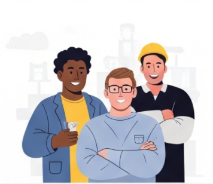
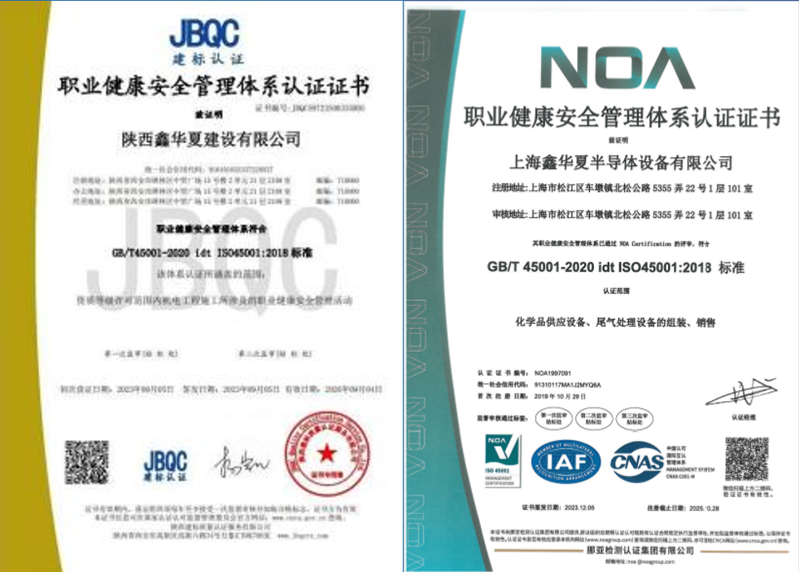
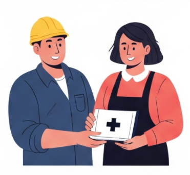
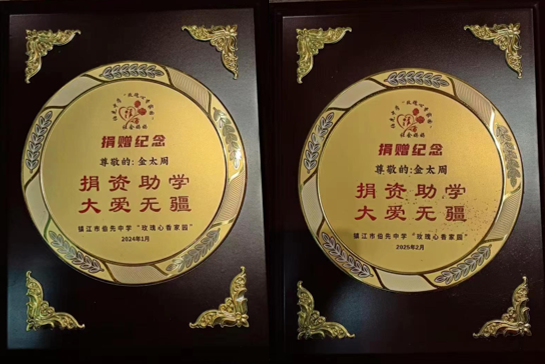
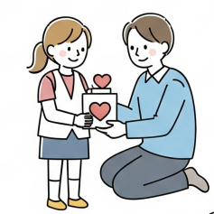

我们积极承担社会责任，确保就业公平和机会均等。
我们提供平等的就业机会，不分种族、性别、宗教、国籍、年龄。公司由5国公民组成，其中女性员工占比30%许。

通过实施国际公认的ISO 45001标准，我们优先保障员工的健康、安全和福祉。
我们严格遵守ISO 45001职业健康安全管理体系标准，投入大量资源进行安全培训，提高员工的安全意识和应急处理能力；健全事故报告调查机制，确保为所有员工提供一个安全健康的工作场所。


我们坚信回馈社会的重要性，积极参与并支持各种慈善活动，为社区发展贡献力量。
作为企业公民，我们积极投身于慈善事业和社区建设。我们通过捐款、物资援助和员工志愿服务等多种形式，支持教育、环境保护、扶贫济困等领域的公益项目。

